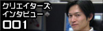

-

第29回目は、『ソニック カラーズ』のサウンドディレクター床井 健一とコンポーザーでもあり、サウンドトラックCDのプロデュースを担当した大谷 智哉を紹介！
-
第28回目は、『ソニックと暗黒の騎士』でプロデューサー兼ディレクターを担当した片野 徹（かたの てつ）を紹介！
-

第27回目は、PlayStation3版/Xbox360版『ソニック ワールドアドベンチャー』でディレクターを担当した橋本 善久（はしもと よしひさ）を紹介！
-
第26回目は、『マリオ＆ソニック AT 北京オリンピックTM』でプロデューサーを担当した大橋 修（おおはし おさむ）を紹介！
-
第25回目は、プランニングセクションの井上 雅之（いのうえ まさゆき）を紹介！
-
第24回目は、『ソニックライダーズ シューティングスターストーリー』でムービーディレクターを担当した日下部 実（くさかべ みのる）を紹介！
-
第23回目は、『ソニック ライダース シューティングスターストーリー』でサウンドディレクターを担当した澤田 朋伯（さわだ とものり）を紹介！
-
第22回目は、『ソニック ライダース シューティングスターストーリー』でアートディレクターを担当した森屋 英明（もりや ひであき）を紹介！
-
第21回目は、『ソニック ライダース シューティングスターストーリー』でプロデューサー兼ディレクター兼メインゲームデザインを担当した森本 兼次郎（もりもと けんじろう）を紹介！
-

第20回目は、『ソニック ラッシュ アドベンチャー』でサウンドディレクターを担当した中川 輝彦（なかがわ てるひこ）を紹介！
-
第19回目は、SOE（セガ オブ ヨーロッパ）で『ソニック ラッシュ アドベンチャー』のマーケティングを担当したミシェル ディックスを紹介！
-
第18回目は、『ソニック ラッシュ アドベンチャー』でディレクターを担当した大隅 栄えを紹介！
-
第17回目は、ソニックカフェデザイナーの清水 芳郎と、ソニックカフェソフトバンク担当ディレクターの熊澤 南を紹介！
-
第16回目は、「ソニック」のキャラクターライセンス許諾を担当している中村 牧子を紹介！
-
第15回目は、ソニックタイトルのローカライズサポートを担当している武内 彩を紹介！
-
第14回目は、『ソニックと秘密のリング』でサウンドディレクターを担当した床井 健一を紹介！
-
第13回目は、『ソニックと秘密のリング』でアートディレクターを担当した三浦 義貴と、リードインターフェイスデザイナーを担当した日野 太郎を紹介！
-
第12回目は、『ソニックと秘密のリング』でメインプログラマーを担当した西村 牧子を紹介！
-
第11回目は、『ソニックと秘密のリング』でメインプランナーを担当した岸本 守央と、プランナーを担当した須永 江身子を紹介！
-
第10回目は、『SONIC THE HEDGEHOG』でディレクターを担当した中村 俊を紹介！
-
第9回目は、『SONIC THE HEDGEHOG』でサウンドディレクションを担当した大谷 智哉を紹介！
-
第8回目は、『SONIC THE HEDGEHOG』でプロデュースを担当した雲野 雅広を紹介！
-
『ソニックアドベンチャー』シリーズ、『ソニックヒーローズ』、『シャドウ・ザ・ヘッジホッグ』のサウンドディレクターを担当した瀬上 純、インタビュー後編をどうぞ！
-

第7回目は、
『ソニックアドベンチャー』シリーズ、『ソニックヒーローズ』、
『シャドウ・ザ・ヘッジホッグ』のサウンドディレクターを担当した瀬上 純を紹介！前編！
-
第6回目は、『ソニックアドベンチャー2』『ソニックアドベンチャー2 バトル』で
ストーリーを担当した前川 司郎を紹介！
-
第5回目は、『ソニック』シリーズで「チャオ」等のデザインを担当した
川村 幸子を紹介！
-
第4回目は、『ソニック ラッシュ』でサウンドを担当した
長沼 英樹を紹介！
-

第3回目は、『シャドウ・ザ・ヘッジホッグ』で
プログラムマネージャー兼メインプログラムを担当した榊原 武を紹介！
-
第2回目は、『ソニックライダーズ』でディレクター兼メインゲームデザインを担当した
森本 兼次郎を紹介！
-

「クリエイターズ インタビュー」 記念すべき第1回目は、
『ソニック』シリーズ等のキャラクターデザイン、イラストでおなじみの上川 祐司を紹介！